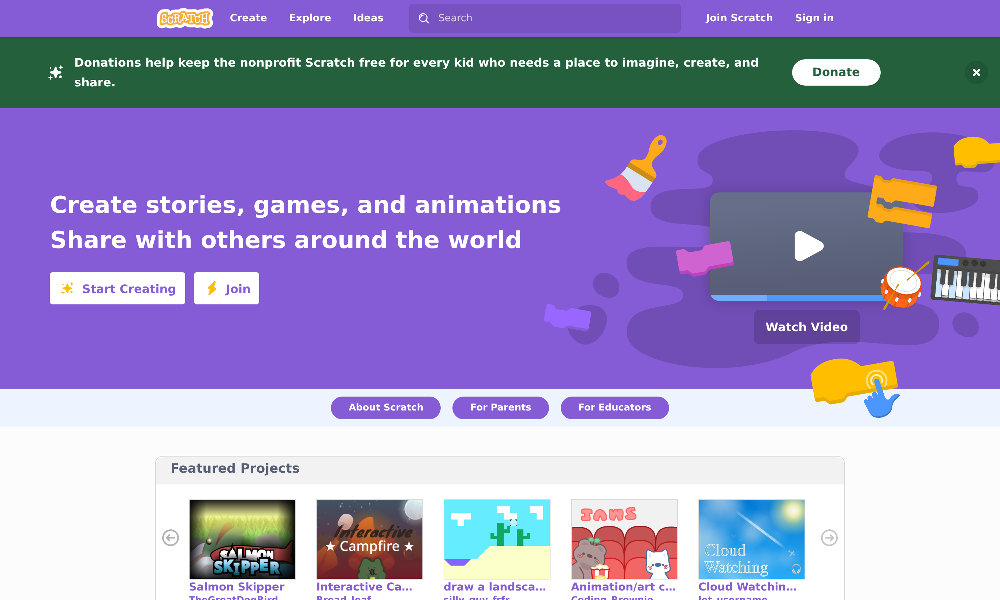

🐱 Scratch for Parents
Learn to code with Scratch — then confidently teach it to your child. Built for grown-ups who have never written a line of code.
You don't need to be a "tech person" to raise one.
This course teaches you the basics of Scratch first, then hands you the exact words, activities, and patience-savers to teach your kid. Every lesson has two halves: Learn It and Teach It.
📚 About This Course
Scratch is a free, colorful coding playground made by MIT for kids roughly ages 8–16 (and younger with help). Instead of typing code, kids snap together colorful blocks like LEGO to make games, animations, and stories. It's the most popular way in the world for children to start coding.
The catch? Many parents feel lost the moment their child asks for help. This course fixes that. In a few short evenings you'll go from "I have no idea what this is" to "let me show you" — sitting beside your child as a confident coding buddy.

✅ What You'll Be Able To Do
- Navigate the Scratch editor without feeling lost
- Read and build block-based programs
- Make a character move, talk, and react
- Build a simple animation and a small game
- Explain each idea to your child in plain words
- Help them get "unstuck" without taking over
- Keep them safe in the Scratch online community
👪 Who This Is For
- Parents and guardians of curious kids
- Grandparents, aunts, uncles, mentors
- Teachers and homeschoolers new to Scratch
- Any adult who wants coding basics, gently
Coding experience required: none. Seriously.
🧭 How This Course Works
Every lesson follows the same rhythm, so you always know what to expect. First you learn the skill yourself, then you get a ready-made plan for teaching it.
🎓 Learn It
Clear, jargon-free explanations with real screenshots of Scratch. You follow along on your own screen.
🛠️ Try It
A tiny hands-on project each lesson, with step-by-step instructions and the finished blocks shown.
💬 Teach It
The exact phrases to say, common kid mistakes to expect, and age-appropriate tips (5–7, 8–11, 12+).
📖 Course Modules
The full course has four modules — all 12 lessons are ready. Work through them in order, or jump to what you need.
Module 1: Getting Started with Scratch Ready
Meet Scratch, tour the editor, and make your very first project move and talk. By the end you'll have coded something together.
Module 2: Core Coding Concepts Ready
The big ideas behind all code — sequences, events, loops, and conditionals — taught the Scratch way.
Module 3: Building Real Projects Ready
Put the pieces together into things kids are proud to share: an animated story and a simple game with a score.
Module 4: Teaching Scratch to Your Child Ready
Go deeper on the teaching craft: motivation, safe sharing, and where to go after Scratch.
✅ What You Need to Start
Almost nothing — that's part of why Scratch is wonderful.
| Need | Details | Required? |
|---|---|---|
| A computer or tablet | Laptop, desktop, or Chromebook works best. Scratch also runs on most tablets. | Yes |
| Internet connection | To use Scratch in your web browser at scratch.mit.edu. | Yes* |
| A web browser | Chrome, Edge, Safari, or Firefox — a recent version. | Yes |
| A free Scratch account | Optional, but lets you save projects. We'll cover sign-up (and parent email) in Lesson 1.2. | Optional |
| 15–40 minutes | Per lesson. Do them at your own pace, ideally before teaching your child. | Yes |
💡 No internet? No problem.
*There's also a free Scratch offline app for Windows, Mac, ChromeOS, and Android. We'll point you to it in Module 4.
🔗 Helpful Links
- Scratch website — where you'll create
- Scratch for Parents — official parent guide & privacy info
- Scratch Ideas & Tutorials — starter tutorials from the Scratch team
- ScratchJr — a simpler version for ages 5–7 (tablet app)
Scratch is a project of the Scratch Foundation. This is an independent educational course and is not affiliated with or endorsed by the Scratch Foundation or MIT.